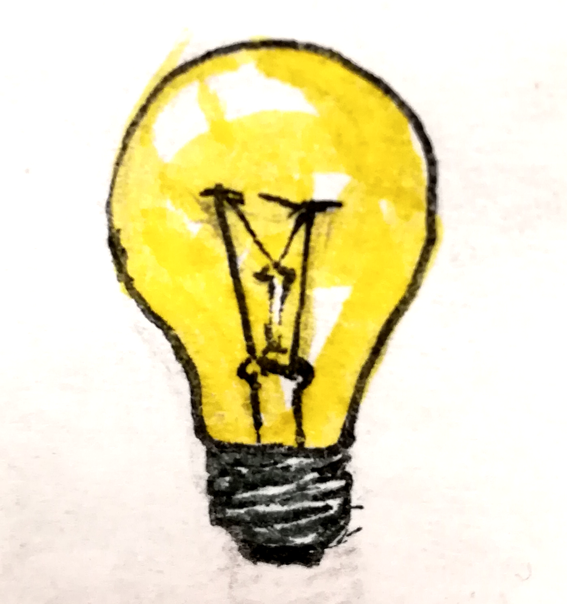
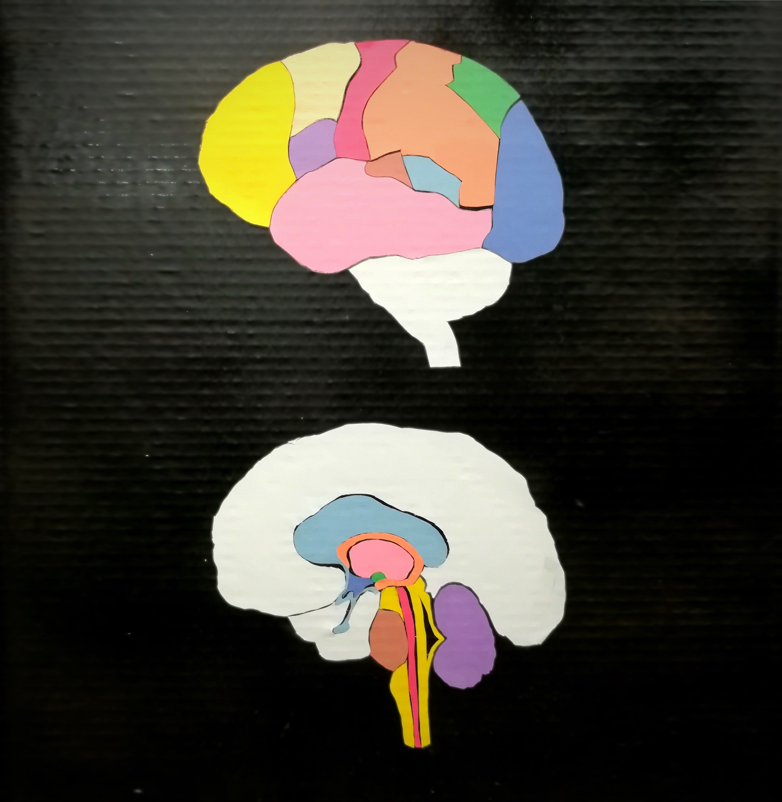

Houses the primary motor cortex, controls important cognitive skills in humans, such as emotional expression, problem solving, memory, language, judgment, and sexual behavior.

Prefrontal Cortex
Responsible for working memory (temporary buffer that processes current information), reasoning about relationships between objects and events, and types of decision making; known as “executive control system”
Motor Cortex
Principle areas of frontal lobe responsible for movement of muscles.
Parietal Lobe
Information such as taste, temperature and touch are integrated. The parietal lobe is also responsible for visuospatial navigation and reasoning.
Somatosensory Cortex
Part of the parietal lobe that registers the sense of touch from different regions of the body.
Occipital Lobe
Responsible for mapping of the visual world (visual mapping and visual memory), determining the color properties of objects, and assessing distance, size, and depth.
Visual Cortex
Part of the occipital lobe that receives and processes impulses from the optic nerve.
Temporal Lobe
Receives sensory information such as sounds and speech from the ears, key to comprehending and understanding speech.
Auditory Cortex
Part of the the temporal lobe devoted to auditory processing.
Broca's Area
Left side of the frontal lobe that is responsible for production of speech.

Interior
Amygdala
Plays central role in learning of fear responses and processing of other basic emotional responses.
Hypothalamus
Responsible for maintaining basic biological needs, including hunger, thirst, temperature control, fighting, fleeing, and mating.
Thalamus
Structure of forebrain through which all sensory information except smell must pass to get to the cerebral cortex, helps to integrate information from various senses.
Cerebellum
Coordinates fine muscle movement and balance. The cerebellum is also involved in attention, planning, and visual perception.
Reticular Formation
Group of fibers that carry stimulation related to sleep and arousal through brainstem, moderates consciousness.
Medulla
Attached to spinal cord, largely controls unconscious but vital processes such as blood circulation, breathing, maintaining muscle tone, and regulating reflexes.
Pons
Bridge of fibers that connects the brainstem to the cerebellum, also contains several clusters of cell bodies involved with sleep and arousal.
Pituitary Gland
Part of the endocrine system that produces a variety of hormones that fan out around body, stimulating actions of other endocrine glands.
Wernicke’s Area
Area of left hemisphere of temporal lobe responsible for comprehension of language.
Hippocampus
Part of limbic system involved in learning and consolidation of memories.